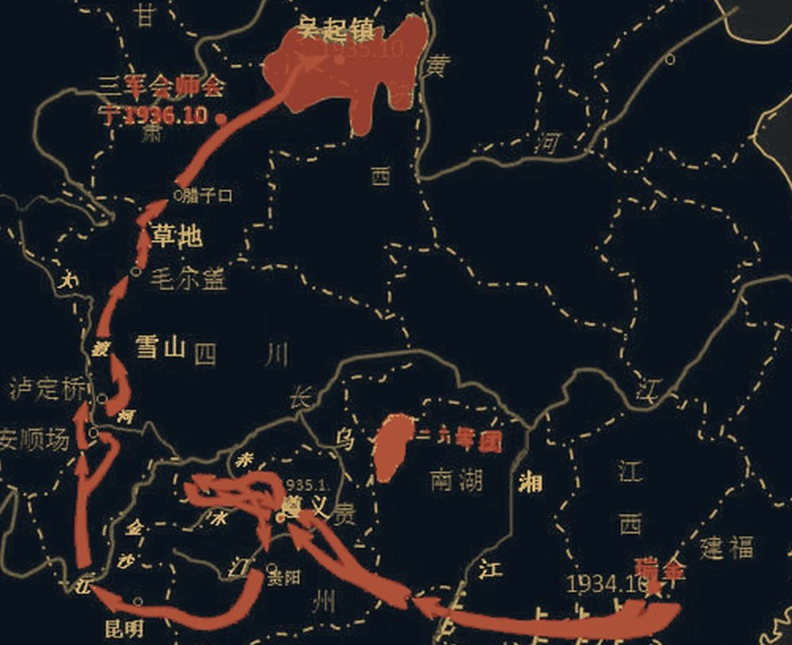

1934.10 · 江西于都
八万六千人，
星夜渡河
中央红军告别中央苏区，踏上战略转移之路。
史实8.6万余人 · 于都河被称为“长征第一渡”
序章 · 一九三四
轻触画面 · 开启声效
纪念中国工农红军长征胜利九十周年
十二站星火问答，重走二万五千里
从于都河畔的星夜，到会宁城下的会师。三种题型、五格星火、四道险关——这一次，不只是答题，而是沿着长征的路，点亮一张星图。
标准 · 25 秒作答 · 积分 ×1.0
1—4 作答 · QWE 锦囊 · R 燎原 · 险关军功 ×1.5
“红军不怕远征难，万水千山只等闲。” 毛泽东 ·《七律·长征》
第 01 站 / 共 12 站
按 1—4 作答 · Q/W/E 锦囊 · R 燎原
历史不是标准答案，而是我们共同走过的路。
THE JOURNEY COMPLETE
十二站，二万五千里，你已抵达。
新得行军印记
十二站全部答对，星火长明。
史实参考：中共中央党史和文献研究院等公开资料 · 本游戏为学习辅助
THE LONG MARCH · 1934—1936

STATION DOSSIER · 行军手记
KEY PASSAGE · 险关
第 03 站
限时更紧 · 军功 ×1.5
按 Enter 进入
FIELD MANUAL · 行军手册
单选 从四个选项中选出正确答案。
排序 按时间先后依次点选词条，选满即判定。
配对 先点左侧、再点右侧，连成一组；全部连好后确认。
答对可积攒 星火，连捷时积攒更快；答错会失去一颗。
五格全满后，可发动 燎原：本题积分 ×2，并延长 10 秒。
火眼 单选排除两项 / 排序点出首项 / 配对连对一组。
疾行 本题延长 10 秒。参谋 给出一条史实线索。
第 3、6、9、12 站为 险关，限时更紧，军功 ×1.5。
完成征途、连捷、全对等表现会点亮 行军印记。